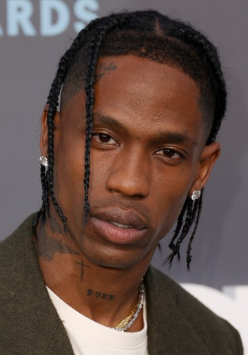

2010s
: Another Decade of Hip-Hop Dominance
Kendrick Lamer
뛰어난 작곡, 작사 실력으로 힙합 역사 최초로 퓰리처상을 수상하는 독특한 이력이 있다.
2010년대의 가장 영향력 있는 아티스트 중 한명으로 평가되며 최근 나온 앨범으로 그래미 어워드를 수상하는 등 여전히 최고의 면모를 보여주고 있다.
2010년대의 가장 영향력 있는 아티스트 중 한명으로 평가되며 최근 나온 앨범으로 그래미 어워드를 수상하는 등 여전히 최고의 면모를 보여주고 있다.
HUMBLE.
tv off (feat. lefty gunplay)
★luther (feat. SZA)★
Drake
힙합과 R&B가 섞인 스타일로 독특한 음악을 발매한다. 2010년대를 머물며 지금까지도 상업적으로 굉장히 성공하였다 평가받는다.
최근 휩싸인 논란으로 인해 그 인기가 주춤했으나 사실 관계가 파악되지 않아 여전히 막강한 스트리밍 화력을 보여주고 있다.
최근 휩싸인 논란으로 인해 그 인기가 주춤했으나 사실 관계가 파악되지 않아 여전히 막강한 스트리밍 화력을 보여주고 있다.
★Massive★
One Dance
God's Plan
Jimmy Cooks (feat. 21 Savage)

Travis Scott
현존하는 래퍼 중 가장 전위적인 음악을 하는 것으로 유명하며 노래나 공연도 과격하게 나타나는 경우가 많다.
이러한 과격한 무대로 인해 관객들의 위험성이 계속해서 올라가고 있으며 한 공연에서는 10명이 사망하고 300여명이 부상을 입기도 했다.
이러한 과격한 무대로 인해 관객들의 위험성이 계속해서 올라가고 있으며 한 공연에서는 10명이 사망하고 300여명이 부상을 입기도 했다.
SICKO MODE
★FE!N (feat. Playboi Carti)★
I KNOW?